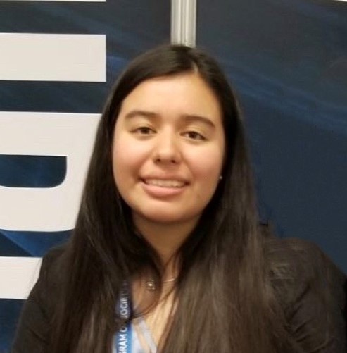

Catalina's Portfolio
Hi! I'm Catalina
Current Undergraduate Computer Science Student
Future Software Engineer
About Me
I am a second year student at Virginia Tech Majoring in Computer Science and minoring in Human Computer Interaction. I enjoy the creative side of Computer Science and can spend hours at a time on the design of my next creation. I find Computer Science exciting and have the goal of becoming a Software Engineer. The idea of being in a constantly changing field is exciting and I take every opportunity I can to learn more. I am constantly starting new personal projects such as building this website, learning how to build virtual reality environments with Unity, or learning how to build a mobile app with Flutter. I have participated in Hackathons such as Technica which I a plan to do again next year and other hackathons hosted at Virginia Tech. I am a curious and creative person always looking for my next challenge. In my free time I enjoy hiking with my dogs (I have a german shepherd and a chocolate lab), watching new movies, and trying new foods.

My Work
Below is some of my recent work divided by Coursework and non-coursework. Check it out!
Coursework
Spring 2020
CS 2114 End of Semester Visualization Project
I was assigned an end of semester project to design a visualization tool application for covid-19. I designed the layout of the application with a wireframe tool and wrote the uml along with documentation for this tool.
Fall 2019 - Present
List of Relevant Courses
Click the Virginia Tech Logo for a list of my Computer Science related classes along with classes related to my minor Human Computer Interaction. On this list I include classes I have already taken and classes I am in the progress of for Spring 2021. My expected graduation date is May 2023.
Research and Projects
Spring 2021
Visionarium Research Intern
I am currently a Visionarium Research Intern. I am responsible for completing tasks to aid in the research of 3D User Interfaces for Scientific Visualization. I mainly contribute to code focused on Virtual Reality. Virginia Tech's Visionarium lab has all kinds on amazing projects on visualization technology.
Present/In Progress
Mobile App Development with Flutter
I am currently in the process of developing a mobile app using Flutter. This is my first app using Flutter so through this process I have been learning Dart as well. The app is meant to target student with the goal of helping student schedule their time and assignments through the application.
Summer 2018
Uniquely U Mobile App
While participating the Girls Who Code Summer Immersion Program I developed a mobile app in collaboration with three other girls. This mobile app can to find a women's correct pants size across various different stores based on the measurements guides provided by each specific store.
Summer 2018
Web Development Work
I developed pages with HTML, CSS, and JavaScript during my time at Girls Who Code and have updated them since then. I developed a website for my favorite dog and a website to play a game similar to Flappy Bird but pocket themed.
Summer 2018
Python Work
I first learned python during my time at Girls Who Code. There I worked on several different projects creating games such as hang man and create your own story.
My Skills
Take a look a my current skills and resume
I am always looking to learn more.
Click Here
for my LinkedIn page.
Contact Information
Email: catalina19@vt.edu
LinkedIn: www.linkedin.com/in/catalina-lemus-a45b47167